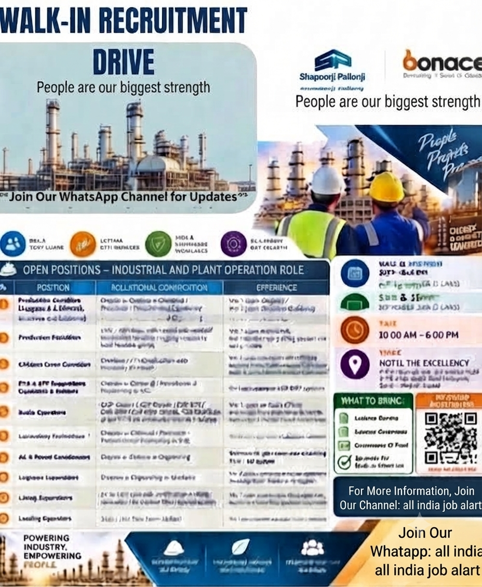

Bonace Engineers Pvt Ltd Recruitment 2026
Bonace Engineers Pvt Ltd has announced a recruitment drive for multiple industrial and plant-operation positions associated with the ONGC Oil & Gas Suvali Plant in Gujarat. The recruitment is aimed at candidates who have relevant experience and qualifications in production operations, supervision, mechanical and industrial activities, logistics, lifting, loading, laboratory operations, radio operations and environmental plant operations.
Candidates looking for opportunities in the oil and gas, industrial, petrochemical and plant operations sectors can check the available positions and eligibility requirements carefully. Several positions are available for candidates with different educational backgrounds and levels of professional experience.
The recruitment process includes both walk-in and online interview options. Candidates who meet the requirements can attend the walk-in interview at the specified venue, while candidates interested in the online process can contact the recruitment representatives and confirm the interview procedure.
🏭 Project: ONGC Oil & Gas – Suvali Plant
📍 Location: Suvali Plant, Gujarat
📅 Walk-in Interview: 12th & 13th September 2026
💻 Online Interview: 15th & 16th September 2026
⏰ Interview Time: 10:00 AM – 6:00 PM
Available Job Positions
Qualification: Degree / Diploma in Chemical, Petroleum, Petrochemical or Mechanical Engineering.
Candidates with relevant production, plant operation, oil and gas or industrial experience may apply for this position.
Candidates with relevant technical qualifications and production supervision experience can apply. Experience in plant operations, production activities, team supervision and industrial environments can be useful for this role.
Candidates with relevant experience in production support, material handling, rigging operations and industrial activities may apply for this position.
Qualification: Graduate / ITI.
Candidates with relevant crane operation experience and required technical certification can apply. Applicants should have suitable experience for offshore or industrial lifting operations.
Qualification: Diploma in Chemical / Petrochemical Engineering or B.Sc.
Candidates having relevant ETP, STP, wastewater treatment or plant-operation experience may apply.
Candidates having relevant COP, Clash or radio-operation certification and experience may be considered for this position.
Qualification: Diploma in Chemical, Petroleum or Petrochemical Engineering / B.Sc.
Candidates with relevant laboratory, chemical testing or industrial laboratory experience may apply.
Qualification: Engineering Degree / Diploma.
Candidates with experience in permit coordination, plant operations, documentation and industrial coordination may apply.
Qualification: Diploma in Engineering / Graduate.
Candidates with experience in logistics, transportation, industrial logistics, marine logistics or related coordination activities may apply.
Qualification: 12th / 10th Pass.
Candidates with relevant lifting supervision and industrial experience can apply for this position.
Qualification: 12th / 10th Pass.
Candidates with relevant tanker loading, material loading or industrial loading experience may apply.
📅 Walk-in Interview Details
Interested and eligible candidates can attend the walk-in interview scheduled for 12th and 13th September 2026. The interview timing mentioned in the recruitment information is from 10:00 AM to 6:00 PM.
Time: 10:00 AM – 6:00 PM
Venue: Hotel The Excellency, Surat, Gujarat
💻 Online Interview Details
Candidates who cannot attend the walk-in interview can check the online interview option. The online interview is scheduled for 15th and 16th September 2026.
Candidates should contact the recruitment representatives before the online interview and confirm the procedure, timing and required documents.
Time: 10:00 AM – 6:00 PM
📄 Documents to Carry
Candidates attending the walk-in interview should keep their updated resume and relevant documents ready. Depending on the position, candidates may be asked to provide educational certificates, experience certificates and technical or safety certifications.
- Updated Resume / CV
- Educational Certificates
- Experience Certificates
- Relevant Technical Certificates
- Government ID Proof
- Passport Size Photographs
- Relevant Safety / HSE Certificates, if applicable
📌 How to Apply
Interested candidates should first check the position that best matches their qualification and experience.
Candidates can attend the walk-in interview on 12th or 13th September 2026 at the specified venue in Surat, Gujarat, between 10:00 AM and 6:00 PM.
Candidates interested in the online interview can contact the recruitment representatives and confirm the online interview procedure for 15th and 16th September 2026.
Applicants should keep an updated resume ready and mention their relevant experience, qualification, current location and the position they are interested in.
📞 Contact Details
Contact Person 1:
Giri Vamsi
📞 +91 7981918977
Contact Person 2:
Ravi Kumar
📞 +91 9001922701
🎓 Eligibility
Eligibility varies according to the position. Engineering candidates may be required to have a Degree or Diploma in Mechanical, Chemical, Petroleum or Petrochemical Engineering. Some positions are also open to Graduates, B.Sc candidates, ITI candidates and 10th or 12th pass candidates with relevant experience.
Candidates should carefully review the qualification and experience requirements for their preferred position before attending the interview. Relevant industrial, plant, oil and gas, petrochemical, logistics, production or site experience may be important depending on the role.
🚀 Career Opportunities
The recruitment drive provides opportunities across several areas of industrial operations. Production professionals can explore Production Operator and Production Supervisor roles, while technical candidates can consider laboratory, ETP/STP and permit coordination positions.
Candidates with logistics and lifting experience can consider Logistics Supervisor and Lifting Supervisor roles. Similarly, experienced crane operators and loading operators can explore the respective vacancies.
📝 Resume Preparation Tips
Candidates should prepare a professional and updated resume before applying. The CV should clearly mention educational qualification, total years of experience, previous employers, current designation, technical skills, certifications and relevant project or plant experience.
Candidates applying for specialized positions should highlight their relevant certifications. For example, crane operators should mention relevant crane operation credentials and experience, while radio operators should mention their applicable radio-operation certifications.
Job seekers should verify recruitment information before travelling or sharing personal documents. Never pay money to an unknown person for a job, interview, registration or guaranteed selection. Confirm important recruitment details directly with the concerned employer or recruitment representative.
📢 Important Information
Interview dates, vacancies, eligibility criteria and recruitment requirements can change. Candidates should confirm the latest information before attending the interview. Applicants should also verify the exact venue, interview timing and required documents before travelling.
Candidates should keep copies of their resume and important certificates. During the recruitment process, applicants should carefully read any employment offer and understand the position, work location, salary, employment conditions and other terms before accepting an offer.
📲 Join Our WhatsApp Channel
Get the latest private jobs, government jobs, construction jobs, engineering jobs, walk-in interviews and recruitment updates.
ALL INDIA JOB ALERT
Follow our WhatsApp Channel for regular job updates.
JOIN WHATSAPP CHANNEL📌 Quick Summary
Company: Bonace Engineers Pvt Ltd
Project: ONGC Oil & Gas – Suvali Plant
Location: Suvali Plant, Gujarat
Walk-in: 12th & 13th September 2026
Online Interview: 15th & 16th September 2026
Time: 10:00 AM – 6:00 PM
Interview Venue: Hotel The Excellency, Surat, Gujarat
Contact: +91 7981918977 / +91 9001922701
✅ Final Words
Bonace Engineers Pvt Ltd recruitment drive offers multiple opportunities for candidates interested in industrial and plant operations. The vacancies cover production, supervision, mechanical and technical operations, logistics, lifting, laboratory work, radio operations, loading and environmental plant operations.
Candidates whose qualifications and experience match the available positions can participate in the recruitment process. Before attending, applicants should prepare their updated CV, carry relevant documents and confirm the latest recruitment information.
For more job updates, candidates can follow the All India Job Alert WhatsApp Channel and stay informed about new vacancies, walk-in interviews and recruitment opportunities.
Best wishes to all candidates for their career and interview!